The backtest-kit framework is the core execution engine of the news-sentiment-ai-trader. It provides a standardized, modular environment for developing, testing, and deploying trading strategies. The framework is built on a registry pattern, allowing developers to decouple trading logic (Strategies) from data sources (Exchanges) and execution environments (Backtest vs. Live).
add* functions before execution.di-kit and di-scoped to manage service lifetimes, ensuring that logic like getCandles automatically fetches the correct data depending on whether it's running in a historical backtest or a live market.The following diagram illustrates how the framework bridges high-level strategy definitions with low-level code entities and the execution loop.
Framework Entity Mapping

The backtesting engine simulates market conditions by iterating through timeframes defined in a Frame. It uses an asynchronous generator Backtest.run() to stream results in real-time or Backtest.background() for event-driven processing. A critical feature is the prevention of look-ahead bias; the framework ensures that getSignal only has access to data available at the simulated timestamp.
For details, see Backtesting: Execution & Reporting.
Every signal generated by a strategy enters a state machine that governs its lifecycle. This system handles the transition from a "scheduled" pending order to an "active" position, and finally to a "closed" state. It calculates PNL by factoring in slippage (CC_PERCENT_SLIPPAGE) and exchange fees (CC_PERCENT_FEE).
For details, see Signal State Machine.
State Transition Flow

In live mode, the framework switches from iterating over historical frames to a real-time while(true) loop. It includes robust crash recovery mechanisms using persistence adapters (e.g., PersistSignalAdapter) to ensure that if the process restarts, it can resume tracking active positions and pending schedules without data loss.
For details, see Live Trading Mode.
The risk subsystem acts as a gatekeeper between signal generation and execution. Registered via addRisk(), these validators check the IRiskValidationPayload (portfolio state) to enforce constraints such as maximum concurrent positions, symbol-specific restrictions, or time-based trading halts.
For details, see Risk Management.
The Walker and Optimizer modules represent the meta-layer of the framework. The Optimizer uses LLMs (via Ollama) to generate strategy code, while the Walker executes multi-strategy comparisons over the same timeframe to identify the most profitable logic.
For details, see AI Strategy Optimization & Walker.
The framework behavior is tuned via GLOBAL_CONFIG. These parameters define the economic environment of the simulation and the safety bounds of live execution.
| Parameter | Default | Purpose |
|---|---|---|
CC_PERCENT_SLIPPAGE |
0.1 | Simulated slippage per trade (%) |
CC_PERCENT_FEE |
0.1 | Trading fee per transaction (%) |
CC_SCHEDULE_AWAIT_MINUTES |
- | Max wait for pending signal activation |
CC_MAX_SIGNAL_LIFETIME_MINUTES |
1440 | Hard timeout for any open position |